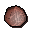

Orb of light

| Config name | caveorb2 |
| Item id | 1482 |
| Value | 10 gp |
| Weight | 1lb |
| Members | Yes |
| Tradeable | No |
| Stackable | No |
| Defined in | scripts/quests/quest_upass/configs/upass.obj |
Orb of light
A magical sphere that glimmers within.
Show 1 ground spawn on the world map → Open in knowledge graph →
Ground spawns
| Area | Coordinates | Level | Count | Map |
|---|---|---|---|---|
| Underground Pass (underground) | 2386, 9677 | 0 | 1 | view |
Quests
Referenced in scripts
scripts/quests/quest_upass/scripts/quest_upass.rs2scripts/skill_magic/scripts/spells/telegrab.rs2scripts/skill_smithing/scripts/smelting/smelting.rs2